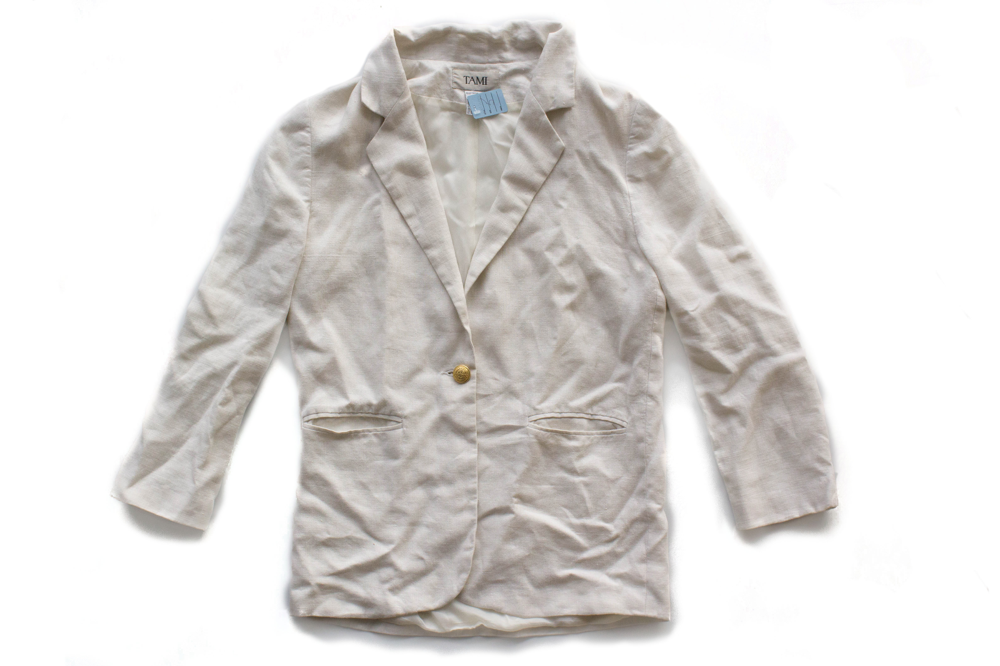

“Ouch!” Jin hissed and sucked her finger while trying to continue sewing the coat, careful to avoid spilling any blood on the coat worth more than a week’s pay. That was the third time today that she’d missed and stuck her finger with her needle instead of the button. Oh how she was beginning to really hate those buttons. This was her third week on the job and just when she thought she was getting the hang of it-
“Ow! Again really?” Why couldn’t she have her mom's skills yet, or better yet, her grandmother's. Jin’s mom could sew the collars on 9 coats a minute, and her grandmother could sew the tags on almost 13 coats in the same time. True, they had been working in this same factory since before she was born, but surely a little of their skill should have rubbed off on her by now. She was 16 now! She must be faster and have better eyesight than her mother and grandmother, so what was the problem?
“Jin, the needle wouldn’t bite you if you paid it more attention,” teased her best friend An as she threaded her own buttons. She barely glanced up, eyes sparkling, before returning her attention to the endless supply of coats.
“I am paying attention… to the clock” Jin whispered back.
She wasn’t really- she was just clumsy today, but any bit of humor was welcome during the endless hours of the day. Hour after hour, button after button, the dull roar of the hundreds of sewing machines used by the women sewing collars or tags drowned out most conversation and gave her a headache. The familiar pain was already building behind her eyes as she tried to stay focused. All she did, day in and day out, was sew buttons, picking up another and another…
“… and another and another and another…” she mumbled to herself, falling into a familiar rhythm, focused on the white cloth and the shiny buttons. She really needed a better mantra, hers just seemed depressing. At least it was better than not having a job, and since Jin started working in the factory, her family was finally able to save a little money! Maybe they’d be able to send her baby brother to school when he was old enough.
Jin picked up the next button and really looked at the gleaming golden crown this time, wondering if she’d ever own something half as nice as she coats she made. Wouldn’t it be wonderful to be able to read the little words embossed in the shiny metal? That would be a dream come true- and maybe, just maybe her little brother would have the chance fulfil that dream.
“For Sheng…” she murmured her brother’s name, and started on her next button.